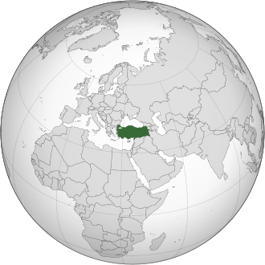
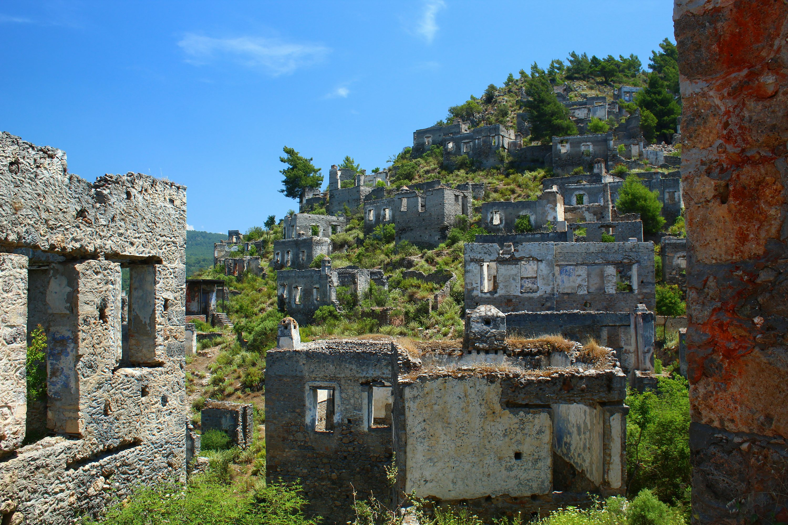
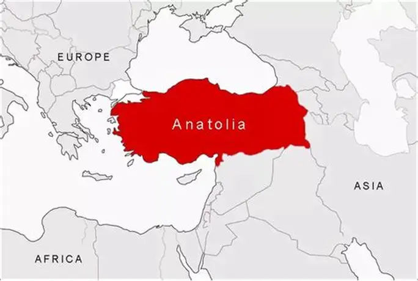
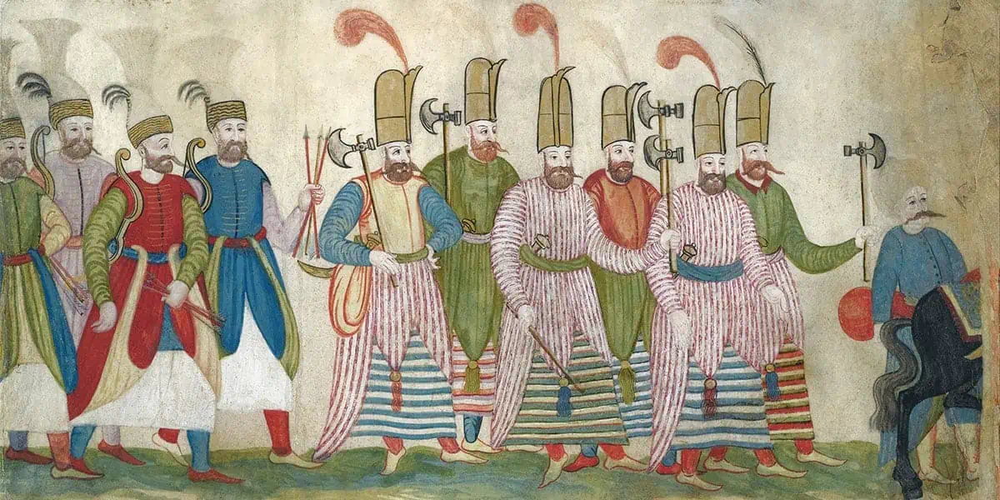

A Turquia é um país de vasta história, considerando-se que já integrou parte de dois grandes impérios mundiais: o Império Bizantino e o Império Otomano. A formação do Estado moderno da Turquia, presente até a atualidade, ocorreu após o fim da Primeira Guerra Mundial (1914-1918). A partir de então, o país vislumbrou um vasto desenvolvimento econômico e social, mas também uma forte instabilidade política, especialmente pela atuação dos militares na política local. Turquia na época 2000 a.C. Os turcos habitaram a parte da Turquia na Ásia cerca de 2000 a.C., depois eles espalharam e fundaram muitos estados e impérios independentes na Ásia e Europa também. Esses impérios incluem o Império de O Grande Hun que foi estabelecido durante o século III a.C., o Império de Göktürk entre (552 - 740), o Império de Uygur (741 - 840), o Império de Avar entre os século 6-9 d.C, o Império de Hazar entre os séculos 5-10 d.C., o Império de O Grande Seljuk que foi estabelecida entre (1040 - 1157), e muitos outros.

A Península da Anatólia consiste na maior parte da Turquia, é uma região habitada desde os tempos pré-históricos mais antigos como a Idade do Ferro. Os anatólios falavam línguas indo-europeias, semíticas e caucasianas meridionais.
Os Hatitas foram o povo que viveu na Anatólia cerca de 2300 a.C., estabeleceram e fundaram nela o primeiro grande Império que existiu entre o século XVIII e 19 a.C. competindo em poder com o antigo Egito. No fim da idade Bronze exatamente entre 1340 a.C. e 1250 a.C., aconteceu uma guerra entre os hititas e os gregos liderados pelo Reino de Micenas o nome da guerra é a Guerra de Troia. Depois da caída do Império dos Hatitos, os novos impérios de Phrygia (no centro da Anatólia), Urartu (no leste da Anatólia), e Lydia (no oeste da Anatólia) ficaram fortes e incorporaram juntos em 550 a.C. para estabelecerem o Império Aquemênida que ficou mais forte e rico com o tempo.
Em 499 a.C. o Império Aquemênida entrou numa guerra com Alexandre, O Grande, o que resultou em uma das guerras mais fortes na história da toda Europa. Alexandre O Grande alcançou uma vitória inesquecível e conquistou Anatólia. Depois de sua morte, Anatólia foi dividida em pequenos reinos nomeadamente; Bitínia, Capadócia, Pérgamo e o Ponto entre os generais até o século II aC. Todos esses reinos continuaram envolvidos em outra guerra com Roma, que os absorveu. A península foi reorganizada como província romana. Em 46 da era Cristã, a Trácia também se tornou uma província romana.
No século VI o imperador romano Constantino escolheu Bizâncio para ser a capital do Império Romano, e quando o Cristianismo chegou na Turquia no primeiro século da Era Cristã. Em 313, o Imperador Constantino garantiu a liberdade religiosa aos cristãos. e depois de sua morte o nome da capital mudou para Constantinopla - agora chamada de Istambul (a segunda maior cidade na Turquia). Depois da divisão do Império Romano, O Império Romano do Ocidente acabou, em 476 D.C, quando seu último imperador foi deposto pelos bárbaros, mas o Império Oriente continuou como um Império Bizantino. No século 6, o imperador Justiniano expandiu o Império Bizantino, recuperando vários territórios do antigo Império Bizantino do Ocidente, na região do Mediterrâneo, incluindo a Itália, sul da Espanha e e norte da África. No século 7 os árabes expandiram os territórios deles e conquistaram vários territórios do Império Bizantino, incluindo Egito, Síria e Palestina

Os Turcos começaram imigrar e estabelecer em Anatólia. Eles conquistaram boa parte da Anatólia e formam o Império dos Seljúcidas que se estendia até a Pérsia. No século VI, eles dominavam territórios entre a China e o Mar Negro. Muito tempo depois, em 1071, os Turcos venceram a guerra de Malazgirt contra os bizantinos, e exatamente nesta data os turcos se espalharam por toda Anatólia e estabeleceram o Império dos Seljuks em Anatólia entre (1080-1308). Este foi o primeiro Império dos Turcos estabelecido em Anatólia - que foi às vezes chamado de Konya Sultanate. Em 1204 a Quarta Cruzada conquistou Constantinopla e fundou o Império Latino. O Império Bizantino tornou-se fragmentado para muitos reinos, um desses reinos foi o Império de Niceia da Anatólia, que reconquistou Constantinopla de novo e acabou o Império Latino. Miguel VIII iniciou a última dinastia dos imperadores bizantinos, mas o Império dele incluiu apenas uma parte da Anatólia e uma parte da Grécia. Aliás, o Império continuou a perder territórios para os turcos. A invasão mongol para Anatólia começou em 1243 e levou para a deterioração e a caída do estado de Seljuks.
No fim de século 13, muitos estados turcos foram estabelecidos, um deles foi o estado Otomano (no idioma Turco foi chamado Osmanli), que expandiu o seu território rapidamente no século 14. O Império Otomano estabeleceu e controlou uma região enorme em três continentes e continuou por 623 anos até a Primeira Guerra Mundial.
O império mongol de Tamerlão ocupou a Anatólia em 1402, capturando Bajazé, más os Otomanos restauraram o Império Otomano com a lidação de Mehemet I depois, Murat II restabeleceu o domínio otomano até o Danúbio, e finalmente, Mehemet II, o Conquistador, tomou Constantinopla (1453) e submeteu a Anatólia até o Eufrates e seus sucessores incorporaram o coração do antigo califado islâmico. Durante o período que o Sultão Mehmed II (1451 – 1481) governou. Ele foi chamado de: O Conquistador, o Império Otomano entrou numa longa fase de desenvolvimento e crescimento até o século XVI. Depois do Sultão Mehmed II, governou o Sultão Solimão I, que foi chamado de ‘’o Magnífico’’. Ele cruzou o Danúbio para conquistar a Hungria e cercou Viena em 1529; em direção ao leste, conquistou os últimos redutos da Anatólia e o antigo centro abássida e seldjúquida do Iraque. Nessa época as fronteiras do país foram estendidas de Criméia no norte de Yemen, Sudão no sul, Irã e Cáspio no leste Viena e Espanha no oeste. Infelizmente ele foi o último governador forte. Após seu reinado, começou a decadência do Império Otomano. A Turquia perdeu a sua superioridade econômica e militar gradualmente, no mesmo tempo que Europa desenvolveu rapidamente, conquistou novas terras, e ficou mais forte.

Os movimentos nacionais que aconteceram no século XIX com o apoio dos poderes europeus e rússia levou a Turquia a diminuir as suas forças lentamente. A fraqueza do Império continuou a mesma até a Primeira Guerra Mundial entre 1914 e 1918, quando Inglaterra, França, Rússia e Grécia ocuparam e dividiram os territórios otomanos. A resistência nacional surgiu contra a ocupação e continuou por quatro anos, sendo constituída por diversos grupos pequenos, desde 1919 até 1922, com a liderança do Mustafá Kemal, que foi comandante do exército otomano. Ele organizou e uniu as forças destes grupos e venceu na guerra militar. Também foi vitorioso na parte diplomática quando assinou um acordo de paz com Inglaterra, França, Itália e Grécia, que confessaram que a Turquia era um país completamente independente com fronteiras combinadas e fixas. Além disso, ele fundou em 1923 a Turquia como conhecemos hoje. Ele foi presenteado com o título de ¨Ataturk¨ que significa o pai dos Turcos.
Mustafá Kemal governou a Turquia por 15 anos, até o ano de sua morte, em 1938. Ele fundou o primeiro grande congresso nacional que criou um sistema político novo baseado nas regras da democracia e direitos humanos. Também fundou um sistema de educação secular, e mudou o alfabeto Árabe para o alfabeto Latino. As mulheres turcas ganharam igualdade em seus direitos - votar e ser eleitas, isso colocou a Turquia à frente de muitas nações europeias em acordo com os direitos das mulheres. Foi uma revolução inigualável que juntou a nação muçulmana com a civilização europeia internacional.